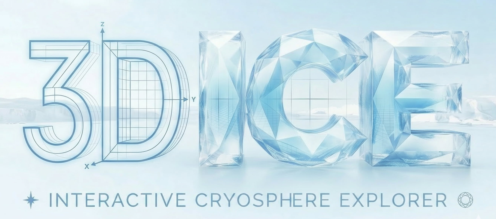

Ice velocity and flowlines
Track drainage routes from the Antarctic interior to outlet glaciers and large floating shelves.

3D ICE turns continental-scale cryosphere datasets into an interactive browser experience for research, teaching, and public communication. Launch the full viewer, explore guided presets, or browse the source datasets behind each layer.
From fast ice streams to basin boundaries, subglacial systems, and ocean circulation beneath ice shelves.
Track drainage routes from the Antarctic interior to outlet glaciers and large floating shelves.
Inspect catchment structure and see how Antarctica partitions into distinct drainage systems.
Reveal effective pressure patterns and hidden channels operating beneath kilometers of ice.
See how Southern Ocean pathways connect to Antarctic shelves and influence ice-ocean exchange.
Use the same viewer to switch continents and compare Greenland outlet glaciers, fjords, and ocean pathways.
Focus on fast outlet systems and the pathways that move ice from high interior catchments to the coast.
Examine how Arctic currents interact with Greenland fjords and marine-terminating glaciers.
Rotate, zoom, and switch layers directly in the browser without any extra software.
One runtime now handles both ice sheets, their terrain, velocities, basal fields, and ocean layers.
The same runtime still supports historical `/tools/...` paths while also working under project Pages prefixes.
The repo can now publish both a compatibility bundle for the main site and a standalone GitHub Pages site.